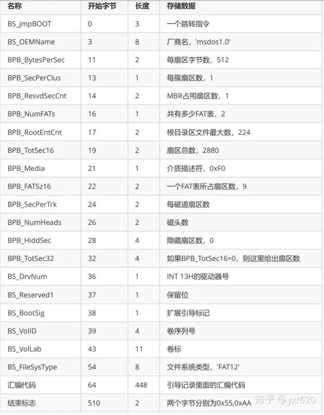

02 FAT12 文件系统
前面我们花了极大的篇幅来写一个极简引导扇区的实现，但是本节相比之下就要短很多了，我们要在我们的软盘中创建 FAT12 文件系统，这样后续我们写入 Loader 和 Kernel 就要方便很多了。
一个磁盘中有没有文件系统，是依靠什么来进行标识的呢？一般而言，每一个文件系统都有特定的一个结构用来描述自己，无论是 ext2 的 metadata 块，还是 FAT12/16/32 在引导扇区中加入的 BPB，都是一种对文件系统的标识。
BPB 的具体结构如下图所示（实在懒得打列表了，干脆搬了一张网图）：

（图 2-1 BPB 的结构）
如诸位所见，FAT12 文件系统头占用了汇编程序开头的 64 个字节。这下可用的空间又少了 64 字节（泪目）
不过它也带给我们一个好处，一般的 FAT 实现都认为只要有 BPB 就是有 FAT 文件系统（有的实现甚至不会管 BPB），这样就可以用一些工具来方便地操作磁盘了。
那么我们就依照此结构写入一下这些结构吧：
代码 2-1 FAT12 文件系统头（boot.asm）
org 07c00h ; 告诉编译器程序将装载至0x7c00处
jmp short LABEL_START
nop ; BS_JMPBoot 由于要三个字节而jmp到LABEL_START只有两个字节 所以加一个nop
BS_OEMName db 'tutorial' ; 8个字节，内容随意
BPB_BytsPerSec dw 512 ; 每扇区固定512个字节
BPB_SecPerClus db 1 ; 每簇固定1个扇区
BPB_RsvdSecCnt dw 1 ; MBR固定占用1个扇区
BPB_NumFATs db 2 ; FAT12 文件系统固定2个 FAT 表
BPB_RootEntCnt dw 224 ; FAT12 文件系统中根目录最大224个文件
BPB_TotSec16 dw 2880 ; 1.44MB磁盘固定2880个扇区
BPB_Media db 0xF0 ; 介质描述符，固定为0xF0
BPB_FATSz16 dw 9 ; 一个FAT表所占的扇区数，FAT12 文件系统固定为9个扇区
BPB_SecPerTrk dw 18 ; 每磁道扇区数，固定为18
BPB_NumHeads dw 2 ; 磁头数，bximage 的输出告诉我们是2个
BPB_HiddSec dd 0 ; 隐藏扇区数，没有
BPB_TotSec32 dd 0 ; 若之前的 BPB_TotSec16 处没有记录扇区数，则由此地址记录，如果记录了，这里直接置0即可
BS_DrvNum db 0 ; int 13h 调用时所读取的驱动器号，由于只有一个软盘所以是0
BS_Reserved1 db 0 ; 未使用，预留
BS_BootSig db 29h ; 扩展引导标记，固定为 0x29
BS_VolID dd 0 ; 卷序列号，由于只挂载一个软盘所以为0
BS_VolLab db 'OS-tutorial' ; 卷标，11个字节，内容随意
BS_FileSysType db 'FAT12 ' ; 由于是 FAT12 文件系统，所以写入 FAT12 后补齐8个字节
LABEL_START: ; 后面就是正常的引导代码
mov ax, cs
mov ds, ax
mov es, ax ; 将ds es设置为cs的值（因为此时字符串存在代码段内）
call DispStr ; 显示字符函数
jmp $ ; 死循环
DispStr:
mov ax, BootMessage
mov bp, ax ; es前面设置过了，所以此处的bp就是串地址
mov cx, 16 ; 字符串长度
mov ax, 01301h ; 显示模式
mov bx, 000ch ; 显示属性
mov dl, 0 ; 显示坐标（这里只设置列因为行固定是0）
int 10h ; 显示
ret
BootMessage: db "Hello, OS world!"
times 510 - ($ - $$) db 0
db 0x55, 0xaa ; 确保最后两个字节是0x55AA
按上文的方法编译运行，结果仍应如图 1-1 所示。虽然显示结果没有变化，但此时的软盘已经拥有了 FAT12 文件系统。